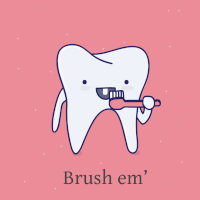

La buena higiene bucal proporciona una boca con un aspecto y olor saludables. Esto significa que: Sus dientes están limpios y no hay restos de alimentos. Las encías presentan un color rosado y no duelen o sangran durante el cepillado o la limpieza con hilo dental. Como cuidar tu higiene bucal Para evitar tener caries u otras enfermedades de la boca, presta atención a estos 10 simples consejos que te servirán para mantener una eficaz higiene bucal. 1. Visita al Odotólogo una vez al mes. 2. Cepillarse tres veces al día. 3. Usar dentífrico con flúor. 4. Usa cepillos de cerdas medio (si no sufe alguna enfermedad periodontal, si es así, usar cepillo suave). 5. Cambia tu cepillo cada tres meses. 6. Utiliza hilo dental. 7. Usa enjuague que no tenga alcohol. 8. Evita comer azúcar en exceso. 9. No abuses de los blanqueadores. 10.Evita morderte las uñas y chuparte los dedos. |
 |